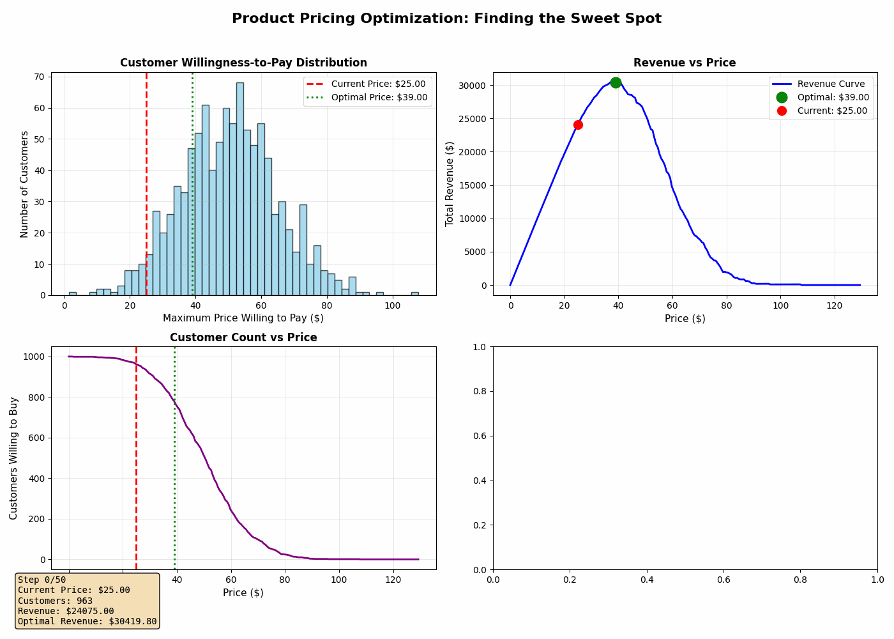

Finding the Perfect Price: A Data-Driven Approach to Product Pricing
Pricing your product is one of the most critical decisions you’ll make as a business owner. Price it too high, and you’ll scare away customers. Price it too low, and you’ll leave money on the table. So how do you find that sweet spot?
Today, I’ll walk you through a visual simulation that demonstrates the mathematics behind optimal pricing. We’ll use Python to model a market of customers, each with their own willingness to pay, and watch as an algorithm discovers the price that maximizes revenue.
The Core Problem
Every customer has a maximum price they’re willing to pay for your product. Some customers see tremendous value and would happily pay $100. Others might only see $20 worth of value. This creates a distribution of price sensitivity across your potential market.
The challenge is this: higher prices mean more revenue per sale, but fewer total sales. Lower prices mean more customers, but less revenue per transaction.
The optimal price sits somewhere in between, at the point where Price × Number of Customers reaches its maximum.
The Market Model
In our simulation, we model a market of 1,000 potential customers. Each customer has a maximum willingness-to-pay that follows a normal distribution. This is realistic because in most markets:
- Most customers cluster around an average price point
- Some customers value the product much more (early adopters, premium buyers)
- Some customers value it much less (price-sensitive buyers)
Here’s what this looks like in code:
import numpy as np
import matplotlib.pyplot as plt
from matplotlib.animation import FuncAnimation
# Set random seed for reproducibility
np.random.seed(42)
# Generate market of customers with normally distributed willingness-to-pay
n_customers = 1000
mean_willingness = 50 # Average price customers are willing to pay
std_willingness = 15 # Standard deviation of willingness to pay
# Each customer has a maximum price they're willing to pay
customer_max_prices = np.random.normal(mean_willingness, std_willingness, n_customers)
customer_max_prices = np.clip(customer_max_prices, 0, None) # No negative pricesCalculating Revenue at Different Price Points
For any given price, we can calculate two things:
- How many customers will buy (those whose willingness-to-pay exceeds our price)
- Total revenue (price multiplied by number of buyers)
def calculate_revenue(price, customer_prices):
customers_willing = np.sum(customer_prices >= price)
revenue = price * customers_willing
return revenue, customers_willingThis simple function is the heart of our pricing analysis. It answers the fundamental question: “If we charge $X, how much money will we make?”
Finding the Optimal Price
Rather than manually testing every possible price, we can use an optimization approach. The simulation uses a gradient-based search that:
- Starts at an initial price guess
- Calculates how revenue changes when price increases or decreases
- Moves the price in the direction that increases revenue
- Repeats until it finds the peak
Here’s the complete simulation with visualization:
import numpy as np
import matplotlib.pyplot as plt
from matplotlib.animation import FuncAnimation
from matplotlib.patches import Rectangle
# Set random seed for reproducibility
np.random.seed(42)
# Generate market of customers with normally distributed willingness-to-pay
n_customers = 1000
mean_willingness = 50 # Average price customers are willing to pay
std_willingness = 15 # Standard deviation of willingness to pay
# Each customer has a maximum price they're willing to pay
customer_max_prices = np.random.normal(mean_willingness, std_willingness, n_customers)
customer_max_prices = np.clip(customer_max_prices, 0, None) # No negative prices
# Function to calculate revenue at a given price
def calculate_revenue(price, customer_prices):
customers_willing = np.sum(customer_prices >= price)
revenue = price * customers_willing
return revenue, customers_willing
# Find price range to explore
min_price = 0
max_price = np.max(customer_max_prices) * 1.2
price_range = np.linspace(min_price, max_price, 200)
# Calculate revenue curve
revenues = []
customer_counts = []
for price in price_range:
rev, count = calculate_revenue(price, customer_max_prices)
revenues.append(rev)
customer_counts.append(count)
revenues = np.array(revenues)
customer_counts = np.array(customer_counts)
# Find optimal price
optimal_idx = np.argmax(revenues)
optimal_price = price_range[optimal_idx]
optimal_revenue = revenues[optimal_idx]
# Set up the animation
fig, ((ax1, ax2), (ax3, ax4)) = plt.subplots(2, 2, figsize=(14, 10))
fig.suptitle('Product Pricing Optimization: Finding the Sweet Spot', fontsize=16, fontweight='bold')
# Optimization path - simulate gradient ascent with some exploration
current_price = mean_willingness * 0.5 # Start low
learning_rate = 2.0
exploration_noise = 3.0
price_history = [current_price]
revenue_history = []
# Simulate optimization steps
for step in range(50):
# Calculate gradient (finite difference)
delta = 0.5
rev_current, _ = calculate_revenue(current_price, customer_max_prices)
rev_up, _ = calculate_revenue(current_price + delta, customer_max_prices)
rev_down, _ = calculate_revenue(current_price - delta, customer_max_prices)
gradient = (rev_up - rev_down) / (2 * delta)
# Add exploration noise that decreases over time
noise = np.random.normal(0, exploration_noise * (1 - step/50))
# Update price
current_price += learning_rate * np.sign(gradient) + noise
current_price = np.clip(current_price, min_price, max_price)
price_history.append(current_price)
revenue_history.append(rev_current)
def animate(frame):
# Clear all axes
ax1.clear()
ax2.clear()
ax3.clear()
ax4.clear()
current_price = price_history[frame]
current_revenue, current_customers = calculate_revenue(current_price, customer_max_prices)
# Plot 1: Customer Willingness Distribution
ax1.hist(customer_max_prices, bins=50, alpha=0.7, color='skyblue', edgecolor='black')
ax1.axvline(current_price, color='red', linestyle='--', linewidth=2, label=f'Current Price: ${current_price:.2f}')
ax1.axvline(optimal_price, color='green', linestyle=':', linewidth=2, label=f'Optimal Price: ${optimal_price:.2f}')
ax1.set_xlabel('Maximum Price Willing to Pay ($)', fontsize=11)
ax1.set_ylabel('Number of Customers', fontsize=11)
ax1.set_title('Customer Willingness-to-Pay Distribution', fontsize=12, fontweight='bold')
ax1.legend()
ax1.grid(True, alpha=0.3)
# Plot 2: Revenue Curve
ax2.plot(price_range, revenues, 'b-', linewidth=2, label='Revenue Curve')
ax2.plot(optimal_price, optimal_revenue, 'go', markersize=12, label=f'Optimal: ${optimal_price:.2f}')
ax2.plot(current_price, current_revenue, 'ro', markersize=10, label=f'Current: ${current_price:.2f}')
ax2.set_xlabel('Price ($)', fontsize=11)
ax2.set_ylabel('Total Revenue ($)', fontsize=11)
ax2.set_title('Revenue vs Price', fontsize=12, fontweight='bold')
ax2.legend()
ax2.grid(True, alpha=0.3)
# Plot 3: Price vs Customer Count
ax3.plot(price_range, customer_counts, 'purple', linewidth=2)
ax3.axvline(current_price, color='red', linestyle='--', linewidth=2)
ax3.axvline(optimal_price, color='green', linestyle=':', linewidth=2)
ax3.set_xlabel('Price ($)', fontsize=11)
ax3.set_ylabel('Customers Willing to Buy', fontsize=11)
ax3.set_title('Customer Count vs Price', fontsize=12, fontweight='bold')
ax3.grid(True, alpha=0.3)
# Plot 4: Optimization Progress
if frame > 0:
steps = list(range(frame + 1))
prices = price_history[:frame + 1]
ax4.plot(steps, prices, 'b-o', linewidth=2, markersize=4, label='Price Search Path')
ax4.axhline(optimal_price, color='green', linestyle=':', linewidth=2, label='Optimal Price')
ax4.set_xlabel('Optimization Step', fontsize=11)
ax4.set_ylabel('Price ($)', fontsize=11)
ax4.set_title('Price Optimization Journey', fontsize=12, fontweight='bold')
ax4.legend()
ax4.grid(True, alpha=0.3)
ax4.set_ylim(min_price, max_price)
# Add text summary
summary_text = f'Step {frame}/{len(price_history)-1}\n'
summary_text += f'Current Price: ${current_price:.2f}\n'
summary_text += f'Customers: {current_customers}\n'
summary_text += f'Revenue: ${current_revenue:.2f}\n'
summary_text += f'Optimal Revenue: ${optimal_revenue:.2f}'
fig.text(0.02, 0.02, summary_text, fontsize=10,
bbox=dict(boxstyle='round', facecolor='wheat', alpha=0.8),
verticalalignment='bottom', family='monospace')
plt.tight_layout(rect=[0, 0.05, 1, 0.96])
# Create animation
anim = FuncAnimation(fig, animate, frames=len(price_history), interval=200, repeat=True)
plt.show()
# Print final results
print(f"\n{'='*60}")
print(f"PRICING OPTIMIZATION RESULTS")
print(f"{'='*60}")
print(f"Optimal Price: ${optimal_price:.2f}")
print(f"Customers at Optimal Price: {customer_counts[optimal_idx]}")
print(f"Maximum Revenue: ${optimal_revenue:.2f}")
print(f"{'='*60}\n")
Understanding the Visualization
When you run this simulation, you’ll see four key visualizations that update in real-time:
1. Customer Willingness-to-Pay Distribution
This histogram shows how many customers are willing to pay each price point. The bell curve shape is typical of most markets. The red dashed line shows our current test price, while the green dotted line shows the optimal price we’re searching for.
2. Revenue vs Price Curve
This is the most important chart. It shows total revenue at every possible price point. Notice how it forms a peak somewhere in the middle. Price too low, and you make little money despite having many customers. Price too high, and you have too few customers despite the high per-unit revenue.
The optimal price is at the peak of this curve.
3. Customer Count vs Price
This chart shows the fundamental trade-off in pricing: as price increases, the number of willing customers decreases. This isn’t linear because of how customer willingness is distributed. There’s often a steep drop-off after you pass certain psychological price thresholds.
4. Price Optimization Journey
This shows the algorithm’s search path as it explores different prices and converges on the optimal one. You’ll see it start at a low price, explore nearby options, and gradually climb toward the revenue peak.
Key Insights from the Simulation
Running this simulation reveals several critical insights about pricing:
1. The optimal price is rarely at the extremes. It’s almost never the highest or lowest price you could charge. It’s a calculated balance.
2. Small changes near the optimum matter less. The revenue curve is relatively flat near the peak, which means you have some flexibility. Being within 5-10% of optimal is often good enough.
3. Being far from optimal is costly. If you’re significantly underpriced or overpriced, you could be leaving 30-50% of potential revenue on the table.
4. Customer distribution shapes everything. If your market has a tight distribution (everyone values your product similarly), the optimal price is very precise. If it’s spread out, you have more flexibility but might consider price discrimination strategies.
Applying This to Your Business
While this simulation uses normally distributed customer preferences, the principles apply to any market:
Research your market. Use surveys, A/B testing, or the Van Westendorp Price Sensitivity Meter to understand customer willingness-to-pay.
Calculate revenue at different price points. Don’t just guess. Actually calculate expected sales volume at various prices.
Test systematically. Use the gradient approach from our simulation. Make small price adjustments and measure the impact on revenue, not just conversion rate.
Watch the entire curve, not just one metric. Increasing prices might decrease sales volume, but it could increase total revenue. Decreasing prices might increase sales, but tank your revenue.
Revisit regularly. Markets change. Your optimal price today won’t be optimal forever.
Beyond the Basics
This simulation assumes a one-time purchase at a fixed price, but the principles extend to more complex scenarios:
- Price discrimination: Offering different prices to different segments (student discounts, enterprise pricing, etc.)
- Dynamic pricing: Adjusting prices based on demand, time, or inventory
- Psychological pricing: Considering $49.99 vs $50.00 effects
- Competitive pricing: Factoring in what alternatives your customers have
Conclusion
Pricing doesn’t have to be guesswork. By understanding the mathematical relationship between price, customer volume, and revenue, you can make data-driven decisions that maximize your business outcomes.
The key takeaway: Your optimal price is where the product of (price × willing customers) reaches its maximum. Everything else is finding that point efficiently.
Run the simulation yourself, experiment with different customer distributions, and see how the optimal price changes. You might be surprised at what you discover about your own pricing strategy.
Want to experiment with this code? You can modify the mean_willingness, std_willingness, and n_customers parameters to model different market scenarios. Try simulating a luxury market (high mean, high std) versus a commodity market (low mean, low std) and see how the optimal pricing strategy changes.